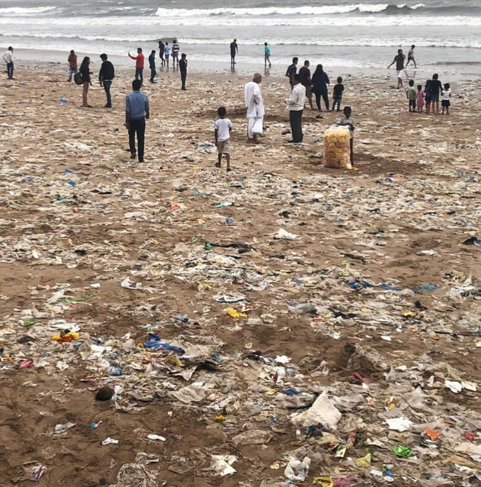

Micro-Plastics
August 31, 2024
Microplastics: The Invisible Threat to our Ecosystem
Did you know that the food you eat, the water you drink, and even the air you breathe are teeming with microplastics? Microplastics, as quoted in National Geographic, are tiny plastic particles less than five millimeters (0.2 inches) in diameter—smaller in diameter than the pearl used in jewelry. They infiltrate our world from the breakdown of massive plastic debris, the microbeads in personal care products, and the synthetic fibers woven into our clothing. These nearly invisible pollutants have pervaded every corner of our environment, lurking in our oceans, rivers, soil, and even the very air that sustains us.
Microplastics have been detected in a wide range of ecosystems, from the deepest parts of the ocean to the highest peaks of mountains. Their presence in the food chain poses potential risks to both wildlife and human health, as they can absorb and transport harmful pollutants. The long-term effects of microplastic exposure on human health are still under investigation, but concerns include potential impacts on the immune and endocrine systems.
In response to this growing crisis, a collaborative science project I participated in aimed to explore practical solutions for managing plastic waste. Our journey began at a local dump site, where we collected a diverse range of plastic waste. We then meticulously sorted and segregated the collected plastics, conducting controlled experiments to observe the effects of burning different plastics and testing their buoyancy by immersing them in water. These tests helped us understand the chemical compositions and physical properties of various plastics, providing insights into their potential environmental impact.
Through our detailed investigations and laboratory work, we identified certain types of plastics that were particularly suitable for upcycling, especially Polyethylene Terephthalate (PET). Recognizing this potential, we partnered with ReCharkha, an upcycling organization dedicated to transforming waste into usable products. We learned the intricacies of upcycling and worked on converting the collected plastics into new, valuable items. This workshop was a transformative experience, highlighting how creativity and innovation can turn waste into resources. We created a range of products which were then sold, showcasing the potential of upcycling as a sustainable solution. This not only helped raise awareness about the importance of recycling and upcycling but also provided a tangible example of how waste can be repurposed into valuable goods.
Microplastics represent an invisible yet pervasive threat to our environment and health. However, innovative solutions like upcycling can help mitigate this threat. By turning waste into valuable products, we can reduce plastic pollution and promote sustainability. The fight against microplastics requires a multi-faceted approach, including reducing plastic production, improving waste management systems, and promoting recycling and upcycling. By collaborating and raising awareness about the devastating impacts of microplastics, we can work towards a cleaner, healthier future.
Through our united efforts, let us ignite a global movement, inspiring others to take a stand against relentless plastic pollution. Together, we can reduce our plastic footprint and safeguard our planet from this insidious threat.
- Nysa Jain